<title>Conscious Communities Mood Board</title>
<link rel="stylesheet" href="https://fonts.googleapis.com/css2?family=Source+Serif+4:ital,opsz,wght@0,8..60,400;0,8..60,600;1,8..60,400&family=Source+Sans+3:ital,wght@0,400;0,600;1,400&family=Alegreya:ital,wght@0,400;0,500;1,400&family=Alegreya+Sans:wght@400;500&family=Newsreader:ital,opsz,wght@0,6..72,400;0,6..72,500;1,6..72,400&family=Fraunces:ital,opsz,wght,SOFT,WONK@0,9..144,400;0,9..144,500;1,9..144,400,50,1&family=Vollkorn:ital,wght@0,400;0,500;1,400&family=Spectral:ital,wght@0,400;0,500;1,400&family=Literata:ital,opsz,wght@0,7..72,400;0,7..72,500;1,7..72,400&family=EB+Garamond:ital,wght@0,400;0,500;1,400&family=Cormorant+Garamond:ital,wght@0,500;1,500&family=Work+Sans:wght@400;500&family=Atkinson+Hyperlegible:wght@400;700&family=PT+Serif:ital,wght@0,400;0,700;1,400&family=Prata&family=Frank+Ruhl+Libre:wght@400;500&display=swap">
<style>
  :root {
    --bg: #F4F4F1; --ink: #1F1F1D; --muted: #6B6B66; --rule: #D9D9D3; --panel: #FFFFFF; --accent: #2A5D8F; --tag: #E8E8E2;
    --serif: "Source Serif 4", Georgia, serif; --sans: "Source Sans 3", "Helvetica Neue", Arial, sans-serif;
  }
  @media (prefers-color-scheme: dark) { :root:not([data-theme="light"]) { --bg: #1B1B1A; --ink: #ECECE7; --muted: #A5A59E; --rule: #35352F; --panel: #242422; --accent: #8FB6DD; --tag: #2E2E2A; } }
  :root[data-theme="dark"] { --bg: #1B1B1A; --ink: #ECECE7; --muted: #A5A59E; --rule: #35352F; --panel: #242422; --accent: #8FB6DD; --tag: #2E2E2A; }

  body { background: var(--bg); color: var(--ink); font-family: var(--sans); font-size: 17px; line-height: 1.5; padding-inline: 20px; padding-block: 0 4rem; }
  main { max-width: 68rem; margin: 0 auto; }
  a { color: var(--accent); text-decoration-thickness: 1px; text-underline-offset: 2px; }
  h1, h2, h3 { font-family: var(--serif); font-weight: 600; line-height: 1.15; margin: 0; text-wrap: balance; }
  h1 { font-size: clamp(2rem, 5vw, 3.2rem); }
  h2 { font-size: clamp(1.6rem, 3.2vw, 2.2rem); }
  h3 { font-size: 1.25rem; }
  p { margin: 0; max-width: 62ch; }
  .lead { font-family: var(--serif); font-size: 1.25rem; max-width: 60ch; }
  .muted { color: var(--muted); }
  .small { font-size: .92rem; }

  header.top { padding-block: 2.5rem 1.5rem; border-bottom: 1px solid var(--rule); display: grid; gap: 1rem; }
  nav.jump { position: sticky; top: env(safe-area-inset-top, 0px); background: var(--bg); border-bottom: 1px solid var(--rule); padding-block: .6rem; display: flex; flex-wrap: wrap; gap: .25rem 1.1rem; font-size: .92rem; z-index: 2; }
  nav.jump a { color: var(--ink); text-decoration: none; }
  nav.jump a:hover { color: var(--accent); }

  section { padding-block: 3rem; border-bottom: 1px solid var(--rule); display: grid; gap: 1.25rem; }
  .sec-head { display: grid; gap: .5rem; }
  .tag { display: inline-block; font-size: .78rem; letter-spacing: .06em; text-transform: uppercase; color: var(--muted); background: var(--tag); padding: .15rem .5rem; border-radius: 2px; }

  .grid { display: grid; gap: 1rem; grid-template-columns: repeat(auto-fill, minmax(15rem, 1fr)); }
  .grid.tight { grid-template-columns: repeat(auto-fill, minmax(11rem, 1fr)); }
  figure { margin: 0; display: grid; gap: .45rem; align-content: start; }
  figure img { width: 100%; height: auto; display: block; border: 1px solid var(--rule); background: #fff; }
  figure.shot img { aspect-ratio: 4 / 5; object-fit: cover; object-position: top; }
  figure.photo img { aspect-ratio: 3 / 2; object-fit: cover; }
  figcaption { font-size: .9rem; color: var(--muted); line-height: 1.35; }
  figcaption b { color: var(--ink); font-weight: 600; }

  .two { display: grid; gap: 1.5rem; grid-template-columns: 1fr; }
  @media (min-width: 860px) { .two { grid-template-columns: minmax(0, 3fr) minmax(0, 2fr); align-items: start; } }
  .notes { display: grid; gap: .8rem; font-size: .98rem; }
  .notes dt { font-weight: 600; }
  .notes dd { margin: 0 0 .4rem; color: var(--muted); }
  .notes dd.ink { color: var(--ink); }

  .swatches { display: flex; flex-wrap: wrap; gap: .5rem; }
  .sw { width: 5.2rem; display: grid; gap: .3rem; font-size: .78rem; color: var(--muted); }
  .sw i { display: block; height: 3.2rem; border: 1px solid var(--rule); }

  .spec { display: grid; gap: .35rem; padding: 1.1rem 0; border-top: 1px solid var(--rule); }
  .spec .name { font-size: .82rem; color: var(--muted); display: flex; gap: .75rem; flex-wrap: wrap; }
  .spec .big { font-size: clamp(1.7rem, 3.4vw, 2.6rem); line-height: 1.1; }
  .spec .line { font-size: 1.15rem; }
  .spec .body { font-size: 1.05rem; max-width: 60ch; color: var(--ink); }
  .spec .sans { font-size: 1.05rem; }

  .compare { display: grid; gap: 1rem; grid-template-columns: repeat(auto-fit, minmax(14rem, 1fr)); }
  .bw img { filter: grayscale(1) contrast(1.05); }
  .duo img { filter: grayscale(1) sepia(.55) contrast(1.05) brightness(.95); }
  .dim img { filter: saturate(.55) contrast(.95) brightness(.9); }

  .dir-title { display: flex; align-items: baseline; gap: .8rem; flex-wrap: wrap; }
  .dir-title .letter { font-family: var(--serif); font-size: 2.2rem; color: var(--muted); font-weight: 400; }

  ul.plain { margin: 0; padding-left: 1.1rem; display: grid; gap: .35rem; max-width: 64ch; }
  .links li { margin: 0; }
  .verdict { border-left: 3px solid var(--accent); padding-left: 1rem; font-family: var(--serif); font-size: 1.1rem; max-width: 60ch; }
  @media (prefers-reduced-motion: reduce) { * { scroll-behavior: auto !important; } }
</style>

<main>
<header class="top">
  <span class="tag">Working document · 18 Sep 2026</span>
  <h1>Mood board for Conscious Communities</h1>
  <p class="lead">Five visual directions for developmentalspaces.org, each shown through samples rather than described. Look, react, cross out, combine. The site question is not decided by this page; it is decided by what you say after reading it.</p>
  <p class="muted">The July "warm monastic" decision and the first redesign pass are both on the table again. The problem with the first pass, in your words: an elegant hand-drawn feeling sitting next to blurry, unstaged photographs. This board treats that as the central question: what is the image language, and does everything else follow from it?</p>
  <p class="muted"><b>Revised the same evening</b> after your notes: nothing we own is fixed (the cover and the five-domains drawing can be redone; Samarra is good but was too much for a cover); no photography will be commissioned; this is about the general idea, not the Bergerac hub; and the Awami Conscious Food book is the reference for the feeling. Direction E below is the result. Directions B and D depend on photography and are kept only for the record.</p>
</header>

<nav class="jump" aria-label="Sections">
  <a href="#e">E · Watercolour</a>
  <a href="#own">What we own</a>
  <a href="#a">A · Pencil and paper</a>
  <a href="#b">B · The quiet house</a>
  <a href="#c">C · The journal</a>
  <a href="#d">D · Warm and civic</a>
  <a href="#type">Type</a>
  <a href="#photos">The photo question</a>
  <a href="#copy">Copy</a>
  <a href="#links">Links</a>
</nav>

<section id="e">
  <div class="sec-head">
    <div class="dir-title"><span class="letter">E</span><h2>Watercolour</h2></div>
    <p class="lead">The language of the Awami Conscious Food book, carried to the site. Loose watercolour illustration on a near-white page, a tight-set transitional serif, one flat yellow, a great deal of air. People, buildings, tables and ideas are painted, not photographed. It is warm without being soft, hand-made without being rustic, and it already belongs to the Life Itself family.</p>
  </div>
  <div class="grid">
    <figure><figcaption><b>The cover.</b> A wash, a flat yellow square, the title set tight. Three elements, nothing else.</figcaption></figure>
    <figure><figcaption><b>A chapter opening.</b> Yellow block, tight title with an italic second line, narrow text column, a figure painted to the edge of the page.</figcaption></figure>
    <figure><figcaption><b>A diagram as a painting.</b> The yellow road from field to bowl. This is how the five domains, or the three streams, could be drawn.</figcaption></figure>
    <figure><figcaption><b>A building, painted.</b> The hub façade in watercolour. Places from anywhere can be drawn this way without a photograph in sight.</figcaption></figure>
    <figure><figcaption><b>Abstraction.</b> Ribbons of colour for flavours. Shows the language can carry ideas, not only objects.</figcaption></figure>
    <figure><figcaption><b>A catalogue page.</b> Many small paintings, one label each. A pattern for a network or resources page.</figcaption></figure>
  </div>
  <div class="two">
    <div class="grid tight" style="align-items:end">
      <figure><figcaption>Cut-out figures sit on the page ground.</figcaption></figure>
      <figure>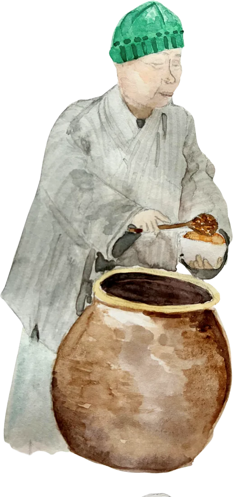<figcaption>A person doing something, not posing.</figcaption></figure>
      <figure>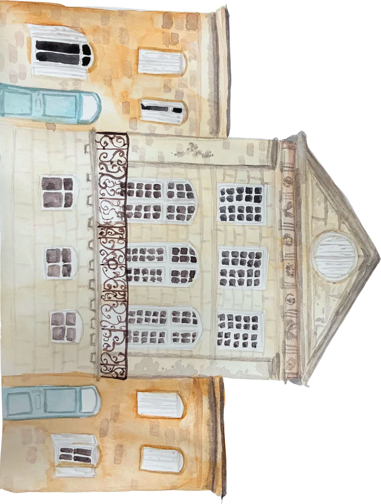<figcaption>A place, in a few strokes.</figcaption></figure>
      <figure>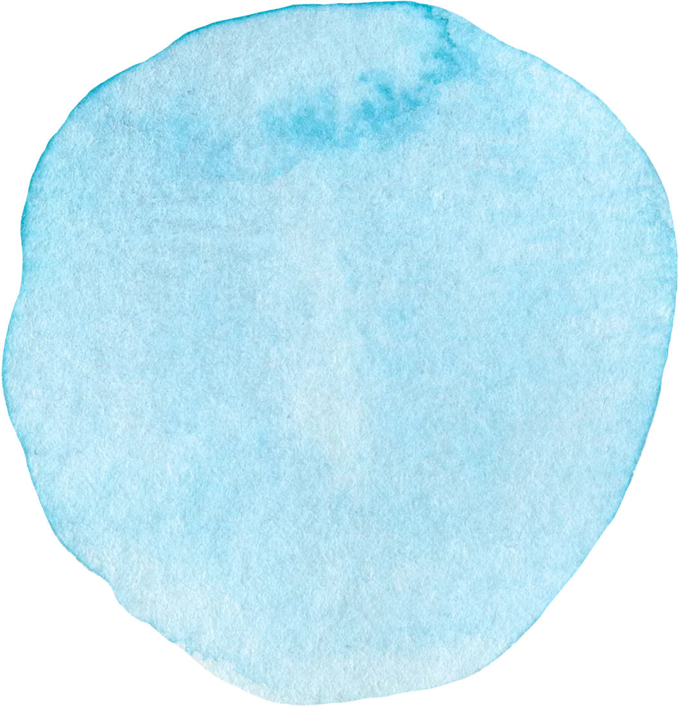<figcaption>A wash as a shape: the spiral could live here.</figcaption></figure>
      <figure>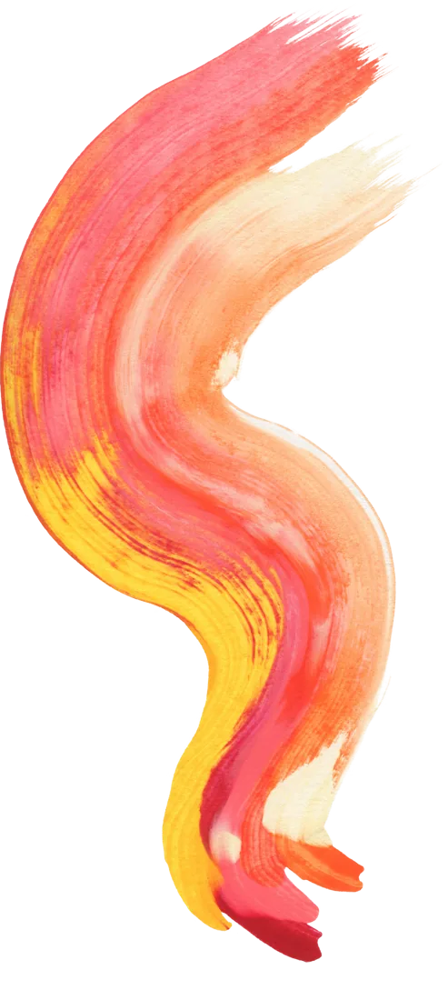<figcaption>Energy without a photograph.</figcaption></figure>
      <figure><figcaption>The long table, painted. Compare the 2019 photograph.</figcaption></figure>
    </div>
    <dl class="notes">
      <dt>Feels like</dt><dd>A beautifully made handbook from a place that takes care. Generous, calm, a little playful, entirely human.</dd>
      <dt>Palette</dt><dd><div class="swatches"><div class="sw"><i style="background:#F5F5F3"></i>page</div><div class="sw"><i style="background:#FFD23F"></i>yellow</div><div class="sw"><i style="background:#111111"></i>ink</div><div class="sw"><i style="background:#F2A65A"></i>wash</div><div class="sw"><i style="background:#8FB3C9"></i>wash</div></div><span class="small">The page is near-white, not cream. Colour comes from the paintings; the one flat colour is yellow.</span></dd>
      <dt>Type</dt><dd>The book uses Literaturnaya, a Russian transitional serif, set tight for titles with an italic second line. Not on Google Fonts; the type section shows the nearest web faces (PT Serif is the closest cousin).</dd>
      <dt>Image policy</dt><dd class="ink">Watercolour illustration throughout: figures, places, objects, diagrams. No photographs at all, which dissolves the mishmash problem rather than managing it. The Samarra etching can still appear inside as a plate; it simply is not the cover.</dd>
      <dt>What it needs</dt><dd>Illustrations, which is realistic where photography is not: Jennifer Chan has already painted this world for Life Itself. A first set of perhaps ten pieces (a spiral, a house, a table, a circle of people, the five domains, the three streams) would carry the site. The whitepaper cover and the five-domains diagram could be redone in the same hand.</dd>
      <dt>Risk</dt><dd>Watercolour can drift toward "gentle wellness" if the type and layout go soft too. The book avoids this with a tight black serif and hard yellow blocks; the site has to keep that spine.</dd>
      <dt>Serves</dt><dd>The door very well. The Learn stream naturally. The spine (whitepaper, manifesto) if the type stays severe and the paintings stay few on those pages.</dd>
    </dl>
  </div>
</section>

<section id="own">
  <div class="sec-head">
    <h2>What we already own</h2>
    <p>The material the project has today. None of it is sacred: the cover and the five-domains drawing can be redone, and the photographs need not be used at all. It is listed so the directions can be judged against what exists.</p>
  </div>
  <div class="grid">
    <figure>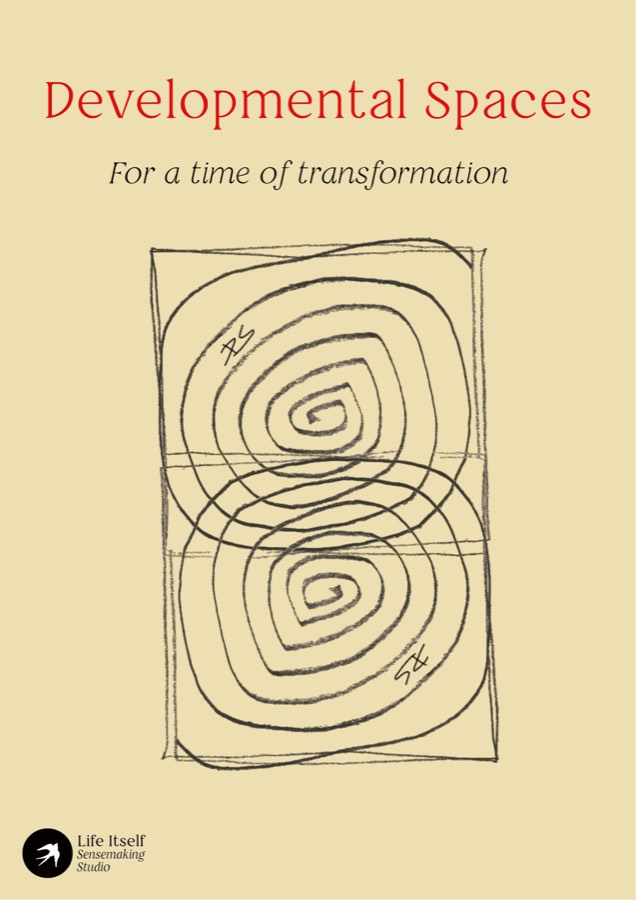<figcaption><b>The whitepaper cover</b> (Sep 2025). Straw paper, vermilion title, pencil spirals, the swallow. The most finished piece of identity that exists.</figcaption></figure>
    <figure>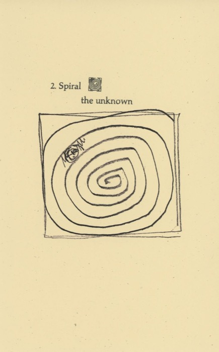<figcaption><b>The spiral card.</b> "2. Spiral · the unknown". The drawing came from a printed card set; it has a history, not just a look.</figcaption></figure>
    <figure>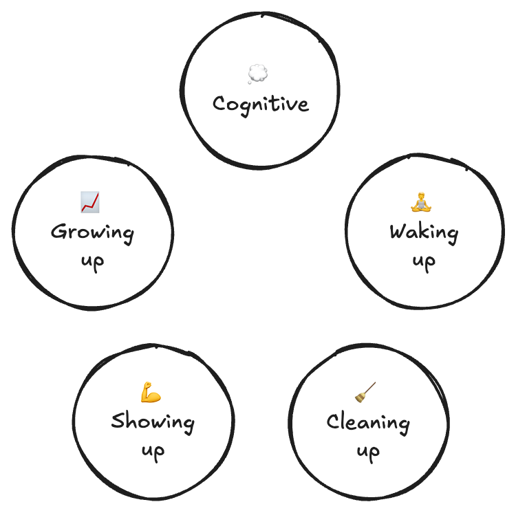<figcaption><b>Five domains, hand-drawn.</b> Already on the whitepaper page. Proof that the drawn language can carry diagrams, not only a logo.</figcaption></figure>
    <figure>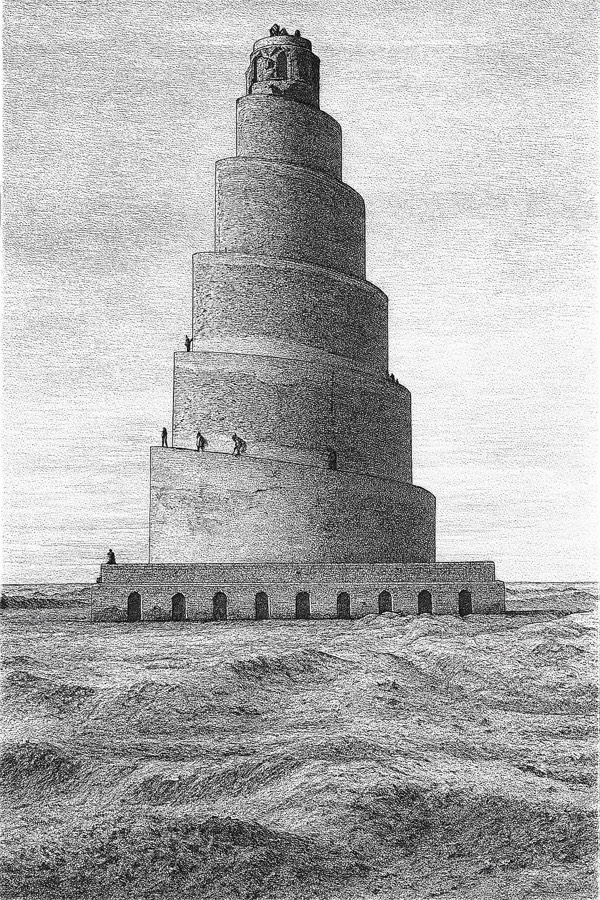<figcaption><b>The Samarra etching.</b> Good in itself; too much for a cover. Belongs inside, as a plate.</figcaption></figure>
    <figure class="photo">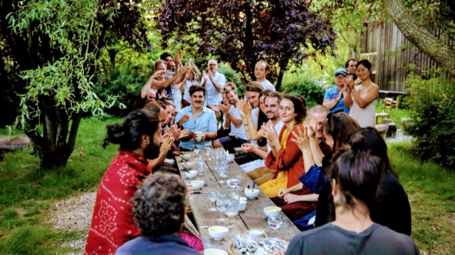<figcaption><b>Bergerac, 2019.</b> The best photograph we have of what a conscious community looks like. Good moment, phone-quality image.</figcaption></figure>
    <figure class="photo">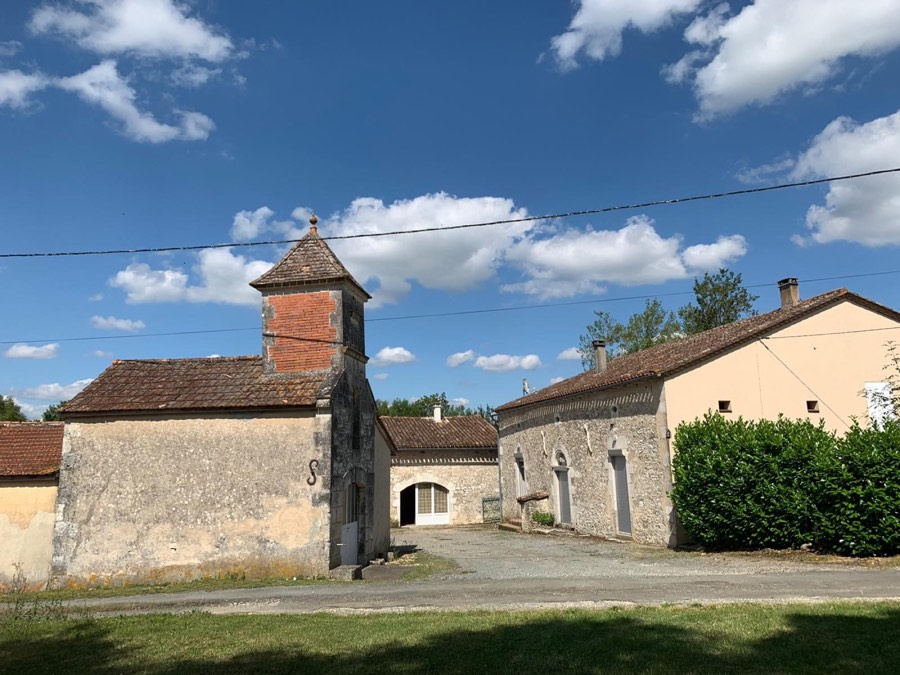<figcaption><b>The hub buildings.</b> A real place. Also a phone snapshot with a power line through it.</figcaption></figure>
    <figure class="photo">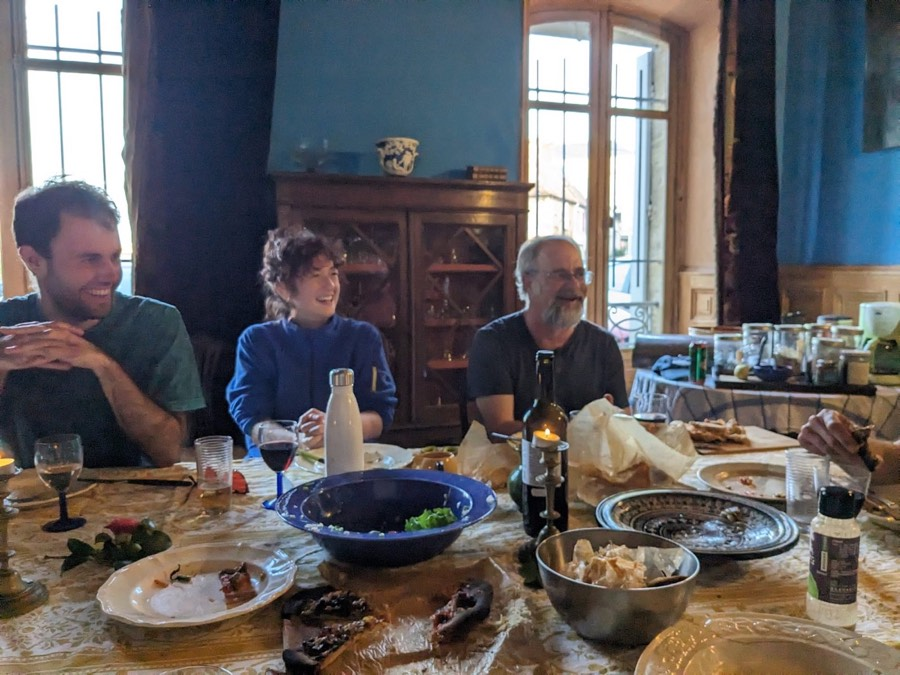<figcaption><b>Praxis residency dinner, 2025.</b> Warm and true, blurred and dim. This is the mishmash problem in one image.</figcaption></figure>
    <figure class="shot">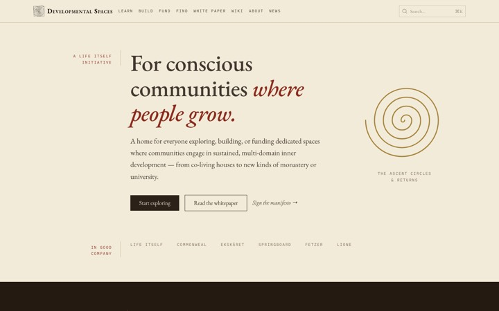<figcaption><b>The July site,</b> for the record: parchment, Garamond, monospace eyebrows, italic accent words. Style without identity.</figcaption></figure>
  </div>
</section>

<section id="a">
  <div class="sec-head">
    <div class="dir-title"><span class="letter">A</span><h2>Pencil and paper</h2></div>
    <p class="lead">A drawn world. The site is illustrated, not photographed: pencil spirals, hand-drawn diagrams, engravings, straw paper, one red. People appear in photographs only deep inside, and then always in the same graphite treatment so they belong to the drawn world rather than fighting it.</p>
  </div>
  <div class="two">
    <div class="grid tight">
      <figure>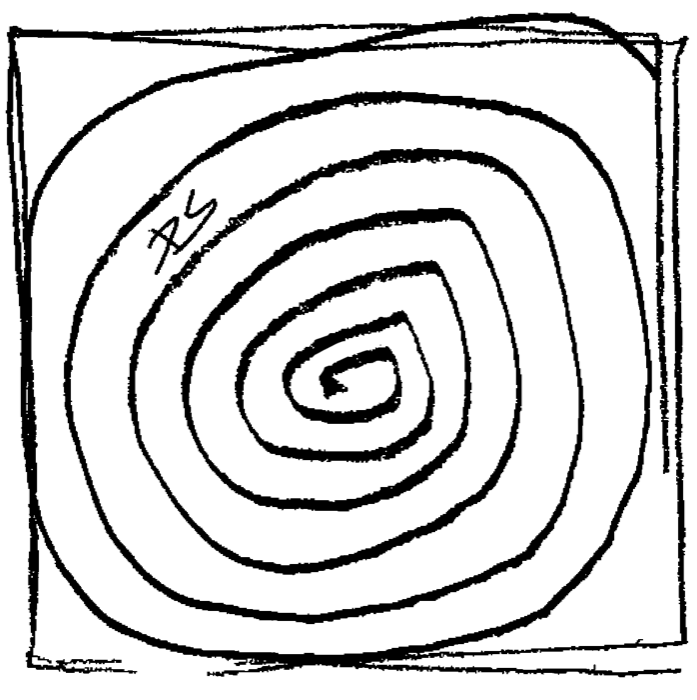<figcaption>The mark, used large and unapologetic.</figcaption></figure>
      <figure><figcaption>Diagrams in the same hand.</figcaption></figure>
      <figure class="shot">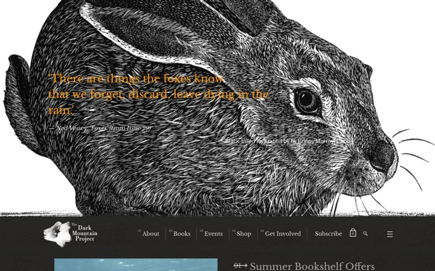<figcaption><b>Dark Mountain.</b> An engraving at full size as the whole opening. One accent on black. The nearest living example of "drawn, serious, warm".</figcaption></figure>
      <figure class="shot">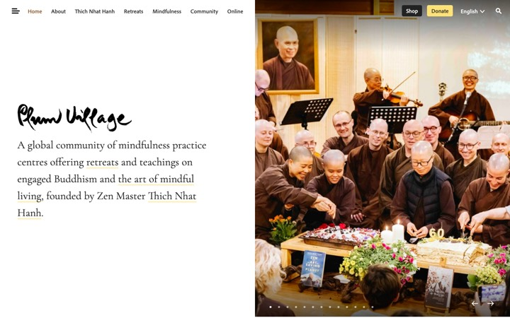<figcaption><b>Plum Village.</b> A calligraphic logotype does the identity work; everything else stays plain.</figcaption></figure>
      <figure class="photo bw">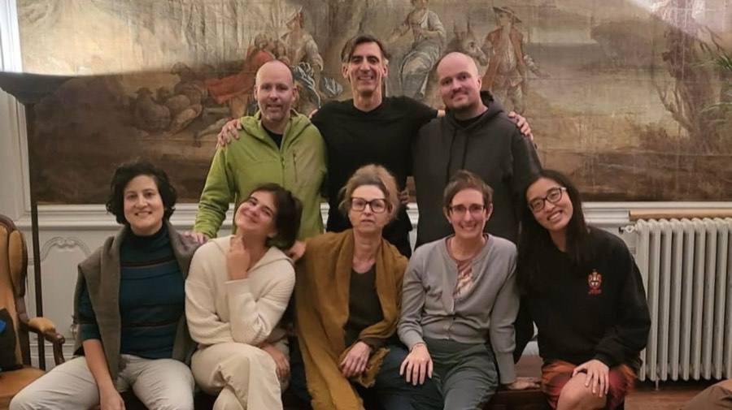<figcaption>Photographs, when they appear, in graphite: they read as illustrations of a text rather than as marketing.</figcaption></figure>
      <figure><figcaption>Engravings as the second image language: buildings, plants, tools, towers.</figcaption></figure>
    </div>
    <dl class="notes">
      <dt>Feels like</dt><dd>A well-made small-press book about a serious idea. Whole Earth Catalog crossed with a monastery guidebook.</dd>
      <dt>Palette</dt><dd><div class="swatches"><div class="sw"><i style="background:#F1E7C3"></i>straw</div><div class="sw"><i style="background:#FAF6EA"></i>cream</div><div class="sw"><i style="background:#26231F"></i>graphite</div><div class="sw"><i style="background:#D8321E"></i>vermilion</div><div class="sw"><i style="background:#5E5850"></i>pencil</div></div></dd>
      <dt>Type</dt><dd>A bookish serif with some hand in it (Alegreya, Vollkorn) or a rougher one; a quiet sans for wayfinding. See the type section.</dd>
      <dt>Image policy</dt><dd class="ink">Drawings and engravings at the door and through the Build stream. Photographs only in Learn and in articles, always graphite or duotone, always captioned.</dd>
      <dt>What it needs</dt><dd>More drawings. Someone with a pencil (the spiral's own hand, ideally) drawing a dozen more things: a house, a table, a circle of chairs, a door. Without that it stays one spiral repeated.</dd>
      <dt>Risk</dt><dd>Could tip into precious or twee. The cure is restraint: few drawings, large, lots of room.</dd>
      <dt>Serves</dt><dd>The spine best of all four. Says "there is real thinking here" before a word is read. Warm enough for the door if the copy is warm.</dd>
    </dl>
  </div>
</section>

<section id="b">
  <div class="sec-head">
    <div class="dir-title"><span class="letter">B</span><h2>The quiet house</h2></div>
    <p class="lead">Photograph-led, but disciplined to the point of austerity. One good photograph per page, graded into a single muted register (stone, olive, linen), a small centred serif, and nothing else. The place is the argument.</p>
  </div>
  <div class="two">
    <div class="grid tight">
      <figure class="shot">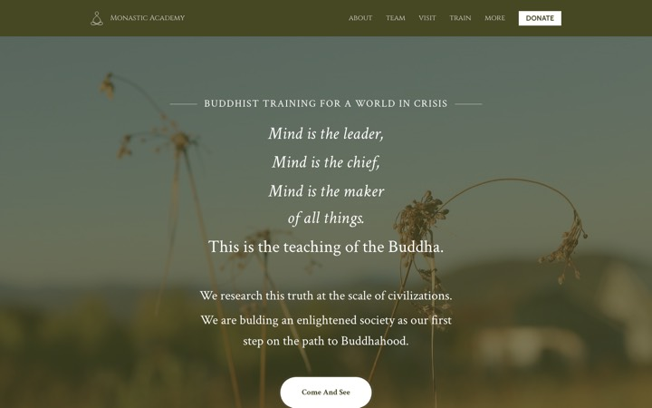<figcaption><b>Monastic Academy.</b> One image, an olive wash, an italic line. Quiet and completely specific.</figcaption></figure>
      <figure class="shot">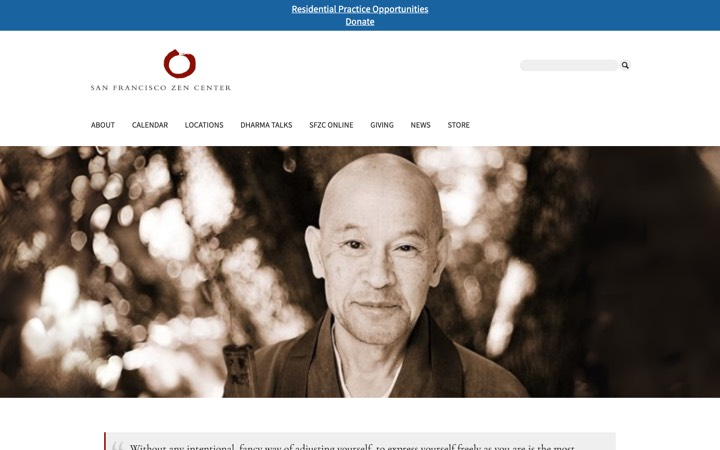<figcaption><b>SF Zen Center.</b> A sepia portrait, a red enso, letterspaced small caps. Tradition carried lightly.</figcaption></figure>
      <figure class="shot">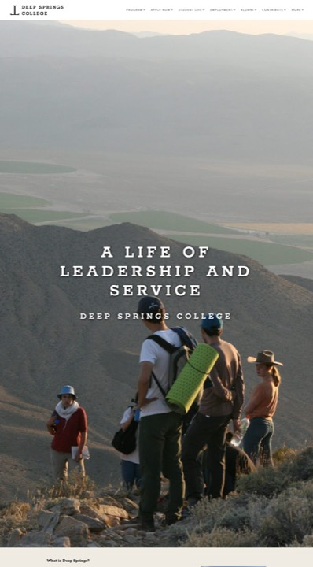<figcaption><b>Deep Springs.</b> People and landscape in one frame; the photograph is the whole pitch.</figcaption></figure>
      <figure class="photo dim"><figcaption>Our buildings in a muted grade. The grade helps; the snapshot composition still shows.</figcaption></figure>
      <figure class="photo dim">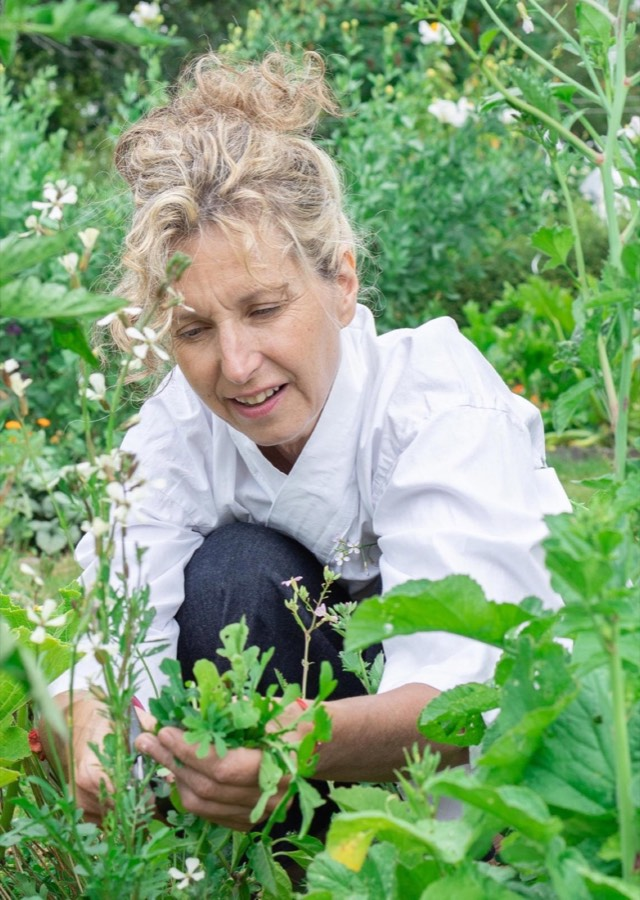<figcaption>The gardening photograph, muted. This one is actually well shot and would hold a page.</figcaption></figure>
      <figure class="photo duo"><figcaption>The garden table in duotone. Coherent, but you lose the colour that made it joyful.</figcaption></figure>
    </div>
    <dl class="notes">
      <dt>Feels like</dt><dd>Arriving at a place at dusk and being shown to a room. Slow, sure, unhurried.</dd>
      <dt>Palette</dt><dd><div class="swatches"><div class="sw"><i style="background:#EDEAE2"></i>linen</div><div class="sw"><i style="background:#8A8870"></i>olive</div><div class="sw"><i style="background:#A89F8C"></i>stone</div><div class="sw"><i style="background:#1E1E1C"></i>black</div><div class="sw"><i style="background:#9B3B2C"></i>brick</div></div></dd>
      <dt>Type</dt><dd>A restrained text serif with a fine italic: Newsreader, Spectral, or the existing EB Garamond at small sizes. Centred at the door, left-aligned inside.</dd>
      <dt>Image policy</dt><dd class="ink">Photographs only, every one graded the same way, and far fewer of them. No drawings except the spiral as a small mark.</dd>
      <dt>What it needs</dt><dd>A photographer. Two days at Bergerac in good light would produce twenty images the whole site could run on. Until then this direction is a promise, not a site.</dd>
      <dt>Risk</dt><dd>Without discipline it becomes the retreat-centre template (Esalen, Schumacher, Embercombe). With discipline it depends entirely on photographs we do not yet have.</dd>
      <dt>Serves</dt><dd>The door and the Learn stream well. The spine less well: a whitepaper wants ink, not a landscape.</dd>
    </dl>
  </div>
</section>

<section id="c">
  <div class="sec-head">
    <div class="dir-title"><span class="letter">C</span><h2>The journal</h2></div>
    <p class="lead">Take the "publishing home" posture literally: the site is a small press. Strong serif display, white paper, a black-and-red printer's palette, engravings and commissioned illustration as art, articles and documents as the unit. Photographs appear only inside reportage, credited like a magazine would.</p>
  </div>
  <div class="two">
    <div class="grid tight">
      <figure class="shot">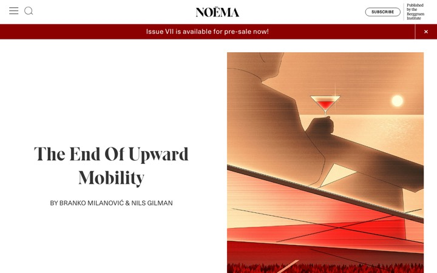<figcaption><b>Noema.</b> Bold serif, a deep red band, illustration. Authority without a stock photo in sight.</figcaption></figure>
      <figure class="shot">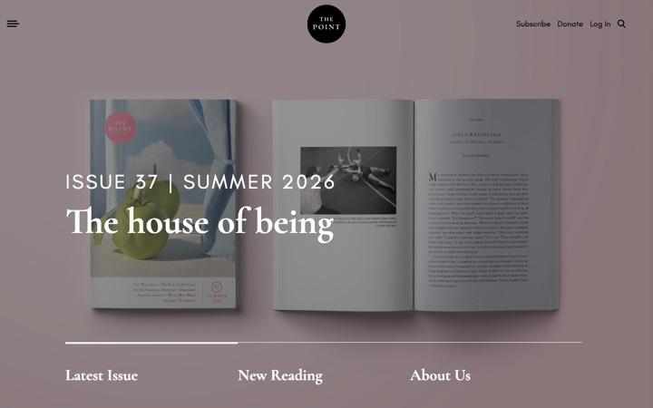<figcaption><b>The Point.</b> The physical magazine as the hero image. Texture from the object, not from CSS.</figcaption></figure>
      <figure class="shot">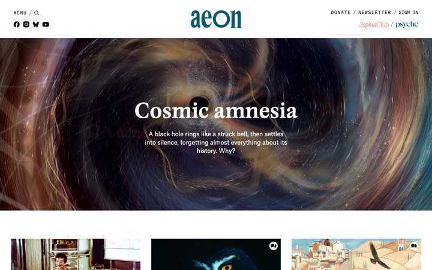<figcaption><b>Aeon.</b> Centred serif over one strong image; nothing decorative.</figcaption></figure>
      <figure class="shot"><figcaption><b>Dark Mountain</b> again: a press with a visual world, numbered nav, torn edge.</figcaption></figure>
      <figure><figcaption>The cover becomes the object the site is built around, the way The Point is built around the issue.</figcaption></figure>
      <figure><figcaption>Engravings as running art, sourced from the public domain and credited.</figcaption></figure>
    </div>
    <dl class="notes">
      <dt>Feels like</dt><dd>A journal you would subscribe to. Issues, essays, documents. A place that publishes rather than promotes.</dd>
      <dt>Palette</dt><dd><div class="swatches"><div class="sw"><i style="background:#FFFFFF;border-color:#ccc"></i>white</div><div class="sw"><i style="background:#111111"></i>ink</div><div class="sw"><i style="background:#C8102E"></i>red</div><div class="sw"><i style="background:#E9E4D6"></i>paper</div></div></dd>
      <dt>Type</dt><dd>A display serif with real bite (Fraunces at its sharp end, Newsreader at 72 optical size, or a Bodoni) over a calm text serif. Small caps for datelines.</dd>
      <dt>Image policy</dt><dd class="ink">Engravings and commissioned illustration as art. Photographs only within articles and always credited. No hero photography.</dd>
      <dt>What it needs</dt><dd>A steady flow of things to publish, which the backlog has. An engraving library, which is free. Occasional illustration commissions.</dd>
      <dt>Risk</dt><dd>Cold at the door. A person wondering whether to live in community may not feel welcomed by a journal. Needs the warmest copy of the four.</dd>
      <dt>Serves</dt><dd>The spine and the Build and Fund streams superbly. Matches the ratified posture ("a working library, not a brochure") most honestly.</dd>
    </dl>
  </div>
</section>

<section id="d">
  <div class="sec-head">
    <div class="dir-title"><span class="letter">D</span><h2>Warm and civic</h2></div>
    <p class="lead">Colour, people, plain language. Photo tiles of real life, a friendly sans beside a serif, the Life Itself yellow somewhere in the family, rounded and open. The direction the old consciouscoliving.org was reaching for, done well.</p>
  </div>
  <div class="two">
    <div class="grid tight">
      <figure class="shot">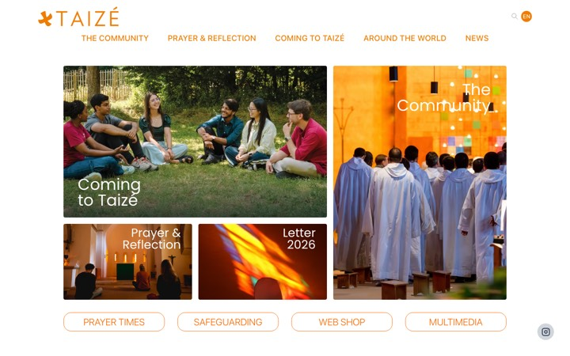<figcaption><b>Taizé.</b> Photo tiles of community life, one orange, no pretension. Humane.</figcaption></figure>
      <figure class="shot">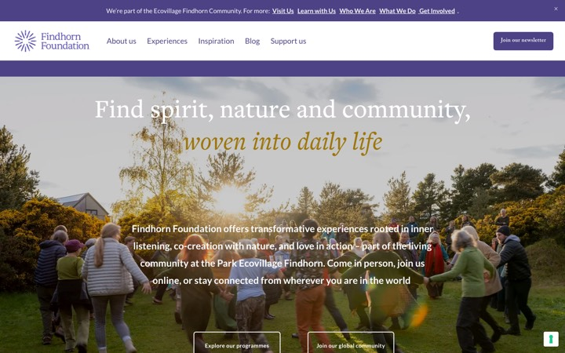<figcaption><b>Findhorn.</b> Joy as evidence. Also the stacked promo bars that come with it.</figcaption></figure>
      <figure class="shot">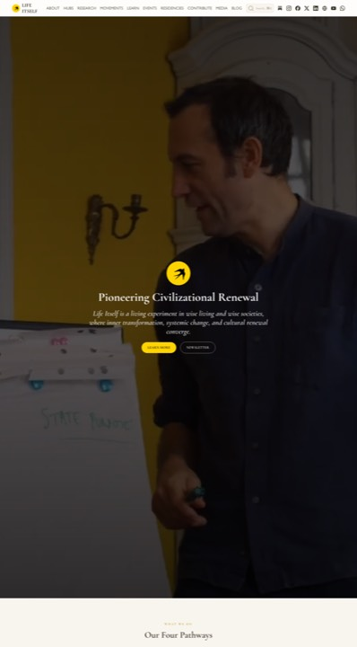<figcaption><b>Life Itself.</b> The parent: yellow, the swallow, a photo hero. Rhyme with it, do not copy it.</figcaption></figure>
      <figure class="photo">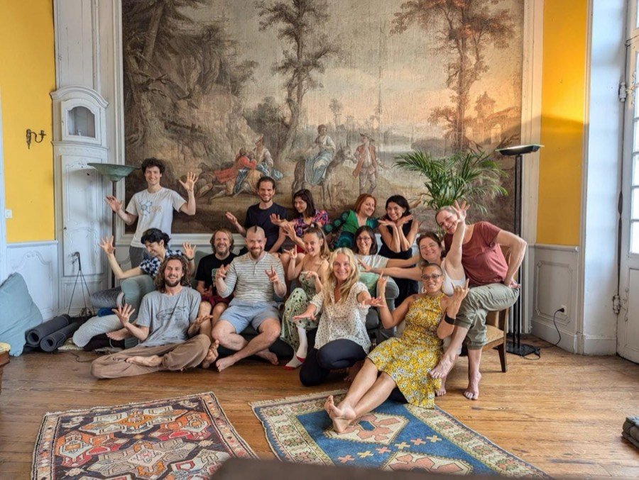<figcaption>Summer residency 2025. In this direction the informality is the point.</figcaption></figure>
      <figure class="photo"><figcaption>The garden table in full colour, which is where it is best.</figcaption></figure>
      <figure class="shot">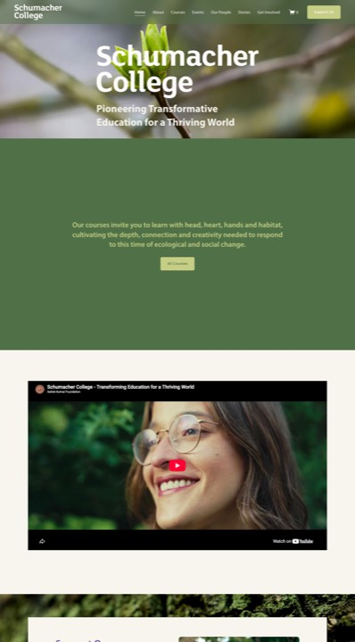<figcaption><b>Schumacher College</b>, as a warning: the same ingredients become a template very fast.</figcaption></figure>
    </div>
    <dl class="notes">
      <dt>Feels like</dt><dd>Being invited to dinner. Open door, first names, nobody in robes.</dd>
      <dt>Palette</dt><dd><div class="swatches"><div class="sw"><i style="background:#FFF8E7"></i>cream</div><div class="sw"><i style="background:#F2C14E"></i>yellow</div><div class="sw"><i style="background:#C65D3B"></i>terracotta</div><div class="sw"><i style="background:#4F6F52"></i>leaf</div><div class="sw"><i style="background:#2B2B2B"></i>charcoal</div></div></dd>
      <dt>Type</dt><dd>A humanist sans doing most of the work (Work Sans, Atkinson Hyperlegible) with a friendly serif for headlines.</dd>
      <dt>Image policy</dt><dd class="ink">Lots of photographs in colour, so they must be good. The current ones would need replacing almost entirely.</dd>
      <dt>What it needs</dt><dd>Photography, again, and more of it than B. And discipline about colour, or it becomes "wellness".</dd>
      <dt>Risk</dt><dd>This is the direction the July decision rejected as "indistinguishable from generic conscious-living content". That judgement still seems right for the front door.</dd>
      <dt>Serves</dt><dd>The curious visitor best. The spine worst.</dd>
    </dl>
  </div>
</section>

<section id="type">
  <div class="sec-head">
    <h2>Type, rendered</h2>
    <p>The same three lines in each candidate face, loaded live. The masthead, the tagline, and a sentence of body text. EB Garamond (the July face) and Cormorant (Archipelago's face) are included for comparison, not as candidates.</p>
  </div>
  <div>
    <div class="spec" style="font-family:'PT Serif',serif"><div class="name"><span>PT Serif</span><span>ParaType · the closest web cousin of Literaturnaya · direction E</span></div><div class="big" style="letter-spacing:-.035em">Conscious Communities</div><div class="line" style="letter-spacing:-.01em"><i>Developmental spaces where people grow</i></div><div class="body">A place dedicated to growth, where a community practises inner development across several domains at once. Not a retreat you visit for a week; a life you live with others, for years.</div></div>
    <div class="spec" style="font-family:'Prata',serif"><div class="name"><span>Prata</span><span>Cyreal · high-contrast transitional, tight display · direction E titles</span></div><div class="big" style="letter-spacing:-.03em">Conscious Communities</div><div class="line" style="font-family:'PT Serif',serif"><i>Developmental spaces where people grow</i></div><div class="body" style="font-family:'PT Serif',serif">A place dedicated to growth, where a community practises inner development across several domains at once. Not a retreat you visit for a week; a life you live with others, for years.</div></div>
    <div class="spec" style="font-family:'Frank Ruhl Libre',serif"><div class="name"><span>Frank Ruhl Libre</span><span>Fontef · tall, tight, sharp · direction E titles</span></div><div class="big" style="letter-spacing:-.035em">Conscious Communities</div><div class="line"><i style="font-family:'PT Serif',serif">Developmental spaces where people grow</i></div><div class="body">A place dedicated to growth, where a community practises inner development across several domains at once. Not a retreat you visit for a week; a life you live with others, for years.</div></div>
    <div class="spec" style="font-family:'Alegreya',serif"><div class="name"><span>Alegreya</span><span>Juan Pablo del Peral · humanist, calligraphic · direction A</span></div><div class="big">Conscious Communities</div><div class="line"><i>Developmental spaces where people grow</i></div><div class="body">A place dedicated to growth, where a community practises inner development across several domains at once. Not a retreat you visit for a week; a life you live with others, for years.</div></div>
    <div class="spec" style="font-family:'Vollkorn',serif"><div class="name"><span>Vollkorn</span><span>Friedrich Althausen · sturdy, bookish, warm · direction A</span></div><div class="big">Conscious Communities</div><div class="line"><i>Developmental spaces where people grow</i></div><div class="body">A place dedicated to growth, where a community practises inner development across several domains at once. Not a retreat you visit for a week; a life you live with others, for years.</div></div>
    <div class="spec" style="font-family:'Newsreader',serif"><div class="name"><span>Newsreader</span><span>Production Type · editorial, fine italic, optical sizes · directions B and C</span></div><div class="big" style="font-variation-settings:'opsz' 72">Conscious Communities</div><div class="line"><i>Developmental spaces where people grow</i></div><div class="body">A place dedicated to growth, where a community practises inner development across several domains at once. Not a retreat you visit for a week; a life you live with others, for years.</div></div>
    <div class="spec" style="font-family:'Spectral',serif"><div class="name"><span>Spectral</span><span>Production Type · screen serif, calm · direction B</span></div><div class="big">Conscious Communities</div><div class="line"><i>Developmental spaces where people grow</i></div><div class="body">A place dedicated to growth, where a community practises inner development across several domains at once. Not a retreat you visit for a week; a life you live with others, for years.</div></div>
    <div class="spec" style="font-family:'Fraunces',serif"><div class="name"><span>Fraunces</span><span>Undercase · soft old-style with a sharp display end · direction C headlines</span></div><div class="big" style="font-variation-settings:'opsz' 144, 'SOFT' 30, 'WONK' 0">Conscious Communities</div><div class="line"><i>Developmental spaces where people grow</i></div><div class="body">A place dedicated to growth, where a community practises inner development across several domains at once. Not a retreat you visit for a week; a life you live with others, for years.</div></div>
    <div class="spec" style="font-family:'Literata',serif"><div class="name"><span>Literata</span><span>TypeTogether · made for long reading · any direction, text only</span></div><div class="big">Conscious Communities</div><div class="line"><i>Developmental spaces where people grow</i></div><div class="body">A place dedicated to growth, where a community practises inner development across several domains at once. Not a retreat you visit for a week; a life you live with others, for years.</div></div>
    <div class="spec" style="font-family:'EB Garamond',serif"><div class="name"><span>EB Garamond</span><span>the July face · for comparison</span></div><div class="big">Conscious Communities</div><div class="line"><i>Developmental spaces where people grow</i></div><div class="body">A place dedicated to growth, where a community practises inner development across several domains at once. Not a retreat you visit for a week; a life you live with others, for years.</div></div>
    <div class="spec" style="font-family:'Cormorant Garamond',serif"><div class="name"><span>Cormorant Garamond</span><span>Archipelago's face · for comparison, not to converge on</span></div><div class="big">Conscious Communities</div><div class="line"><i>Developmental spaces where people grow</i></div><div class="body">A place dedicated to growth, where a community practises inner development across several domains at once. Not a retreat you visit for a week; a life you live with others, for years.</div></div>
    <div class="spec"><div class="name"><span>Companion sans faces</span><span>for navigation, captions, buttons</span></div>
      <div class="sans" style="font-family:'Alegreya Sans',sans-serif">Alegreya Sans · Learn · Build · Fund · Find · Whitepaper · Wiki · About · News · Summer gathering at the Life Itself hub, Bergerac, 2019.</div>
      <div class="sans" style="font-family:'Work Sans',sans-serif">Work Sans · Learn · Build · Fund · Find · Whitepaper · Wiki · About · News · Summer gathering at the Life Itself hub, Bergerac, 2019.</div>
      <div class="sans" style="font-family:'Atkinson Hyperlegible',sans-serif">Atkinson Hyperlegible · Learn · Build · Fund · Find · Whitepaper · Wiki · About · News · Summer gathering at the Life Itself hub, Bergerac, 2019.</div>
      <div class="sans" style="font-family:'Source Sans 3',sans-serif">Source Sans 3 · Learn · Build · Fund · Find · Whitepaper · Wiki · About · News · Summer gathering at the Life Itself hub, Bergerac, 2019.</div>
    </div>
  </div>
</section>

<section id="photos">
  <div class="sec-head">
    <h2>The photograph question</h2>
    <p class="lead">The mishmash has three honest resolutions. Each is shown on the same image so the difference is the treatment, not the subject.</p>
  </div>
  <div class="compare">
    <figure class="photo"><figcaption><b>1 · As shot.</b> Honest, warm, and visibly a phone snapshot. Works only in direction D, and only with better photographs around it.</figcaption></figure>
    <figure class="photo bw"><figcaption><b>2 · Graphite.</b> Forgives blur and dim light; belongs with the pencil world (A). Loses the candlelight.</figcaption></figure>
    <figure class="photo duo"><figcaption><b>3 · Warm duotone.</b> Coherent and forgiving, sits between A and B. Risks looking like a filter, which is what it is.</figcaption></figure>
  </div>
  <div class="verdict">Photography is not going to be commissioned, and this is not about one hub, so the honest answer is the fourth one: no photographs on the front door at all. Directions A and E are built without them. If photographs ever appear, they are of many places, treated one way, deep inside.</div>
</section>

<section id="copy">
  <div class="sec-head">
    <h2>Copy, noted and parked</h2>
    <p>The words on the first pass are not right, and that is a separate job from the design. What is wrong, so it is not forgotten:</p>
  </div>
  <ul class="plain">
    <li>"Developmental spaces where people grow" above "Places where people grow, together" repeats "people grow" and asks the reader to accept "developmental space" before it has been explained.</li>
    <li>The lede lists formats (co-living houses, retreat centres, monastery, university) before saying what they have in common. The common thing should come first.</li>
    <li>"Exploring them, building them and funding them" is the site's structure showing through. A visitor needs to feel addressed before they are routed.</li>
    <li>The stream names ("Learn: living together, on purpose") are headings that explain the site rather than sentences that speak to someone.</li>
  </ul>
  <p class="muted small">Suggested handling: once the direction is chosen, one working session on the hero and the three door sentences, with you writing and me editing rather than the other way round.</p>
</section>

<section id="links">
  <div class="sec-head">
    <h2>Links to look at directly</h2>
    <p>Screenshots flatten things. These are worth opening.</p>
  </div>
  <ul class="plain links">
    <li><a href="https://dark-mountain.net/">Dark Mountain Project</a>: engravings, one accent, a press with a world. (A, C)</li>
    <li><a href="https://plumvillage.org/">Plum Village</a>: hand-drawn logotype, split layout, real people. (A, B)</li>
    <li><a href="https://www.monasticacademy.org/">Monastic Academy</a>: one photograph, an olive wash, a line of text. (B)</li>
    <li><a href="https://www.sfzc.org/">San Francisco Zen Center</a>: red enso, sepia portrait, small caps. (B)</li>
    <li><a href="https://www.deepsprings.edu/">Deep Springs College</a>: place and people in one frame. (B)</li>
    <li><a href="https://www.noemamag.com/">Noema</a> and <a href="https://aeon.co/">Aeon</a>: editorial authority, illustration over photography. (C)</li>
    <li><a href="https://thepointmag.com/">The Point</a>: the physical object as hero. (C)</li>
    <li><a href="https://www.taize.fr/en">Taizé</a> and <a href="https://www.findhorn.org/">Findhorn</a>: warm, humane, photographic. (D)</li>
    <li><a href="https://lifeitself.org/">Life Itself</a> and <a href="https://archipelago.place/">Archipelago</a>: the family, to rhyme with and not copy.</li>
    <li>Print, for the shelf: the <i>Whole Earth Catalog</i> (working library, hand-made, serious); Dark Mountain's books; Emergence Magazine in print; any Taschen facsimile of a medieval herbal, for how drawings and text share a page.</li>
  </ul>
</section>

<section>
  <div class="sec-head">
    <h2>What would help most from you</h2>
  </div>
  <ul class="plain">
    <li>Is E the direction, or E carrying some of A (pencil for the mark and diagrams, watercolour for figures and places) or of C (the journal's severity on the whitepaper and manifesto pages)?</li>
    <li>Is a small illustration commission with Jennifer Chan realistic, and roughly when? The mockups can use the existing Awami paintings as stand-ins meanwhile.</li>
    <li>Type: does the tight black serif of the book (PT Serif or Prata on the web) feel right for the site, or should the site be a touch softer than the book?</li>
    <li>Yellow: the book's flat yellow is Life Itself's. Keep it as the family tie, or give Conscious Communities its own single colour?</li>
  </ul>
</section>
</main>
